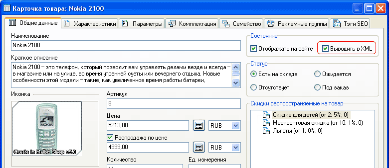
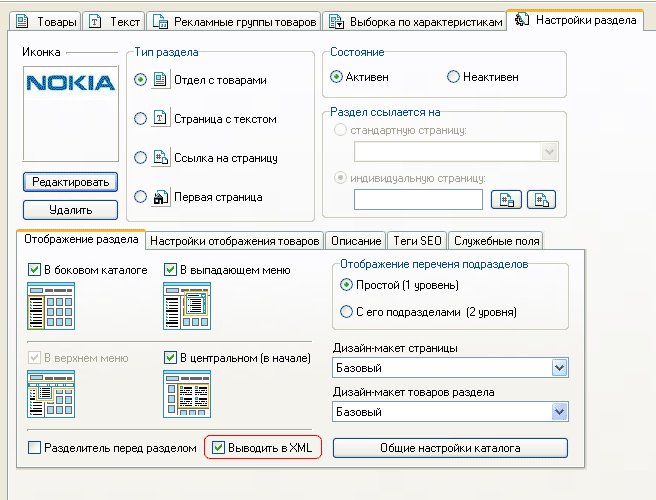

Одним из путей обеспечения успешного продвижения интернет-магазина является предоставление информации о его товарах для информационно-поисковых сайтов. В настоящее время популярным и общепринятым форматом для передачи таких данных является формат XML.
По умолчанию, скрипты магазина предоставляют возможность экспорта данных в XML-формате в следующих редакциях:
Окончательный формат XML-файла для отправки на портал может быть скорректирован с учетом требований каждого конкретного сайта, размещающего у себя информацию о товарах интернет-магазина.
Также есть возможность ограничить вывод нежелательных товаров или разделов при экспорте в XML. Ограничение товаров осуществляется индивидуально в карточке каждого товара в общих данных:

Также можно воспользоваться автовычислениями для того, чтобы назначить необходимую настройку целой группе товаров. Помимо этого, есть возможность исключить разделы магазина (соответственно вместе с товарами, которые находятся внутри них) через аналогичную опцию в настройках раздела:
